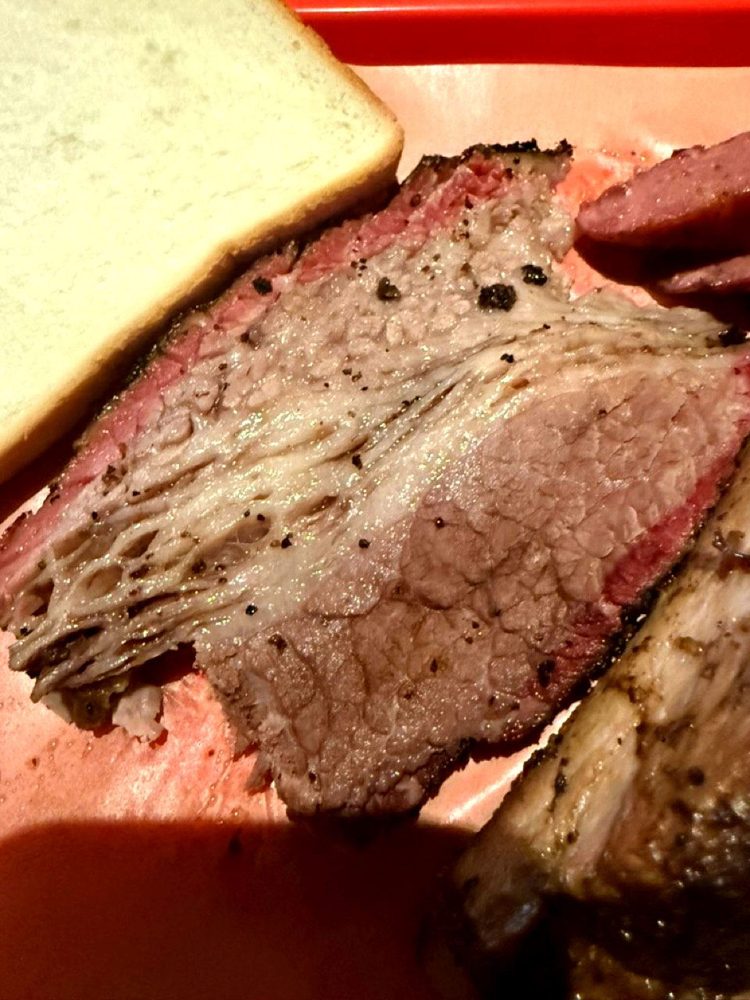

テキサスBBQとは何か。アメリカ南部の料理哲学
「アメリカのBBQって、日本の焼肉と何が違うの？」——そんなふうに聞かれること、実は結構あるんですよね。その答えのいちばん奥にあるのが、テキサスBBQです。テキサスBBQというのは、アメリカ・テキサス州を中心に発達した、塊肉を110〜120℃で8〜14時間かけて燻し焼きにする料理文化のことなんです。主役は牛胸肉のブリスケットで、火力ではなく時間をかけて硬い肉を柔らかくする ロー&スロー という調理思想がその核にあります。もとは19世紀のドイツ系移民の肉屋が「売れ残った硬い肉を保存する手段」として始めたものなんですが、いまでは Aaron Franklin や Snow's BBQ といった名店が世界中の食通を引き寄せる、アメリカ料理の最高峰のひとつになっています。

テキサスBBQの起源
はじまりは、19世紀中頃のテキサス州中部だと言われています。ドイツ系・チェコ系の移民が「マーケット」と呼ばれる肉屋を営んでいて、売れ残った硬い肉を保存するために、塩を擦り込んで燻し焼きにする手法を編み出したんですよね。
当時はまだ冷蔵技術が発達していませんでした。痛みやすい肩バラ（ブリスケット）も、長い時間をかけて燻製にしてあげることで、数日間日持ちさせていたそうです。これが、いまのロー&スロー文化の源流になっています。
もともとは「保存食」だったものが、いつしか「最高においしい料理」として愛されるようになって、20世紀後半にはアメリカ全土へ、そして世界へと広まっていきました。なんだか素敵な話だなと、個人的には思っています。
4つの地域スタイル
ひとことでテキサスBBQと言っても、実は地域によって4つのスタイルに分かれているんです。ここがちょっと面白いところなので、ざっと見てみてください。
| スタイル | 地域 | 特徴 | 代表的な肉 |
|---|---|---|---|
| セントラルテキサス | オースティン周辺 | 塩・胡椒のみのシンプルラブ。BBQソース最小限 | ブリスケット |
| イーストテキサス | 東部・ルイジアナ寄り | 甘いトマトベースのソースで煮込む | ポークリブ |
| ウェストテキサス | 西部・乾燥地帯 | カウボーイ式、メスキート（堅木）の直火 | ビーフ全般 |
| サウステキサス | 南部・メキシコ国境 | メキシコ料理の影響、ビーフヘッド（牛頭の蒸し焼き） | バルバコア |
世界的に「テキサスBBQ」と呼ばれているのは、主に セントラルテキサス・スタイルのことなんですよね。塩と粗挽き胡椒だけのシンプルなラブで、ポストオーク（堅木）の薪を燃やして、12時間以上じっくり燻して焼き上げていきます。
主役は牛、特にブリスケット
他のアメリカンBBQ（カンザスシティ、メンフィス、カロライナ）が豚を主役にしているのに対して、テキサスBBQは牛が主役なんです。なかでもブリスケット（牛胸肉）は、絶対的な王様といっていい存在です。
テキサスでは「BBQ ＝ ブリスケット」と言っても過言ではなくて、店の格はブリスケットの完成度で決まると言われています。その次に評価されるのが、ビーフリブ（牛のあばら）、ホットリンク（自家製ソーセージ）、ポークリブ、プルドポーク、という順番ですね。
では実際にブリスケットを焼くにはどうするのか。手順は ブリスケットの作り方 で詳しく解説しています。使う牛肉そのものを知りたい方は アメリカンビーフのガイド も参考にしてください。
日本の焼肉との根本的な違い
日本で「BBQ」と聞くと、たいていは焼肉スタイルを思い浮かべますよね。でも、テキサスBBQはそれとはまったくの別物なんです。どこがどう違うのか、表で並べてみました。
| 日本の焼肉 | テキサスBBQ | |
|---|---|---|
| 火力 | 250〜400℃ | 110〜120℃ |
| 時間 | 1切れ数十秒 | 1塊12時間以上 |
| 肉の形状 | 薄切り（5〜15mm） | 塊肉（4〜6kg） |
| 主役の肉 | カルビ、ロース | ブリスケット |
| 調理する人 | 食べる人と同じ | ピットマスター（専門料理人） |
| 料理の本質 | 素材の質を信じる | 時間の使い方を信じる |
焼肉が「素材の質」で勝負する文化だとすると、テキサスBBQは「時間の使い方」で勝負する文化なんですよね。どちらが優れているという話ではなくて、そもそも本質的に違う思想の上に立っている、ということだと思っています。
ピットマスターという職業
テキサスBBQでいちばん尊敬される職業が ピットマスター（Pitmaster）です。「ピット」はBBQの炉のこと、「マスター」はその火を支配する人。10時間以上の長丁場を仕切って、温度・煙・肉の変化を読み切る技術と経験を持った料理人のことを指すんですよね。
いまのテキサスでは、ピットマスターは シェフと同等か、それ以上の社会的地位 を持っています。Aaron Franklin は本を出版して、Netflix のドキュメンタリー（"Chef's Table: BBQ"）でも取り上げられて、世界中の料理人が彼の手法を学びに通っているくらいなんです。
代表的な店と人物
- Franklin Barbecue（オースティン）：Aaron Franklin が経営しています。世界一のブリスケットと評されていて、毎日3時間並ばないと食べられないそうです。
- Snow's BBQ（レキシントン）：Tootsie Tomanetz（女性ピットマスター）が80歳を超えても現役で焼いている伝説の店です。営業は土曜日のみ。
- Goldee's Barbecue（フォートワース）：2021年 Texas Monthly 誌で「全米No.1」に選ばれた、新世代ピットマスターのお店です。
- la Barbecue（オースティン）：女性経営で、ブリスケットのバーントエンドが名物になっています。
- Cooper's Old Time Pit BBQ（ランプス）：直火スタイルの代表格で、巨大なオープンピットで焼き上げるお店です。
SLOW FIRE が日本に持ち込みたい思想
テキサスBBQが教えてくれるのは、料理って「素材」だけじゃなくて「時間」と「場の作り方」でもおいしくなるんだ、ということなんですよね。
もちろん、日本の焼肉文化の素晴らしさを否定したいわけではありません。違うおいしさの作り方を、もうひとつ持ち込みたい、ただそれだけなんです。テキサスBBQの12時間は、参加者全員が「焼ける時間」を一緒に分かち合う儀式のようなもの。料理する人が「ホスト」として場を演出していく——これこそが、SLOW FIRE が日本に広めたいと思っている思想です。
CONCLUSION
結論
あらためてまとめると、テキサスBBQとは、塊肉を120℃で12時間以上かけて燻し焼きにする、アメリカ南部の料理文化のことです。日本の焼肉が「素材の質」で勝負するとしたら、テキサスBBQは「時間の使い方」で勝負している、という違いなんですよね。
主役はブリスケット、そして料理するのはピットマスター。SLOW FIRE SHOP で扱っている海外BBQラブは、このテキサス文化にいちばん近い使い方ができる商品です。まずは ロー&スローの考え方 を押さえてから、ブリスケットの作り方 へ進んでみてください。そこがきっと、テキサスBBQの世界の入口になりますよ。
FAQ
テキサスBBQについてよくある質問
テキサスBBQとは何ですか？
テキサスBBQというのは、アメリカ・テキサス州を中心に発達した、塊肉を110〜120℃の低温で8〜14時間かけて燻し焼きにする料理文化のことなんです。もとは19世紀のドイツ系・チェコ系移民の肉屋が、保存食として始めた手法が起源だと言われています。
テキサスBBQと日本の焼肉は何が違いますか？
焼肉は薄切り肉を300℃前後で数十秒〜数分焼くスタイルですが、テキサスBBQは塊肉を120℃で12時間かけて焼きます。火力ではなく時間をかけて、コラーゲンをゼラチン化させるのが本質なんですよね。料理する人が「ホスト」として場全体を演出する、という点も日本の焼肉とは違うところです。
テキサスBBQで主役となる肉は？
ブリスケット（牛胸肉）が絶対的な主役です。その次にビーフリブ、ポークリブ、ソーセージ、プルドポークが続きます。テキサスでは「BBQ＝ブリスケット」と言っても過言ではないくらいなんですよね。
ピットマスターとは何ですか？
ピットマスター（Pitmaster）というのは、BBQの専門料理人のことです。「ピット」とはBBQの炉のことで、その火を支配する人を意味します。10時間以上の長時間調理を仕切って、温度・煙・肉の変化を読み切る技術が必要になります。
日本でテキサスBBQを楽しむには？
本格的なテキサスBBQ店は日本にもいくつかあります（東京・渋谷の『LOW & SLOW』など）。家庭で再現するなら、蓋付きグリル（Weber Smokey Mountain など）と海外BBQラブがあるといいですよ。SLOW FIRE SHOP で扱っている Big Bark や Beef Bounce は、テキサス系のラブとして本格派です。
PERFECT WITH
テキサスBBQに合うラブ
セントラルテキサスの伝統に沿った、塩・胡椒・スパイス系のラブ